Ou suis-je ?
Je vais sur cette page vous présenter mon passé. Mais tout d'avord laisser moi vous permettre de me situer sur notre planète.
Mettez le curseur dans cette zone !
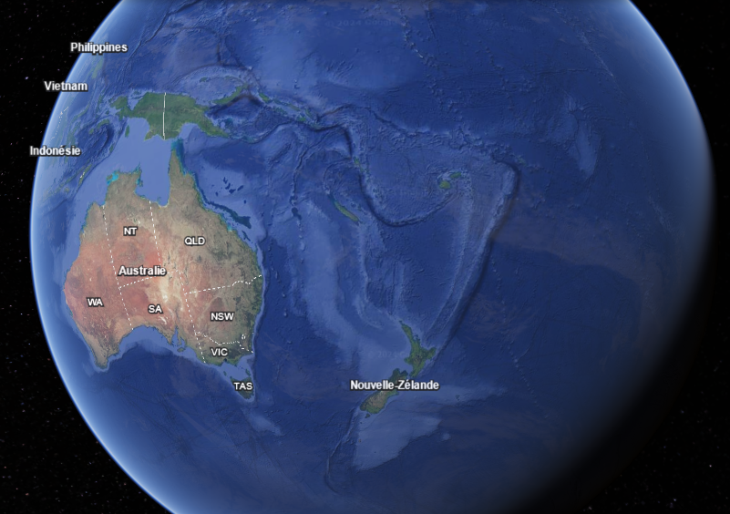 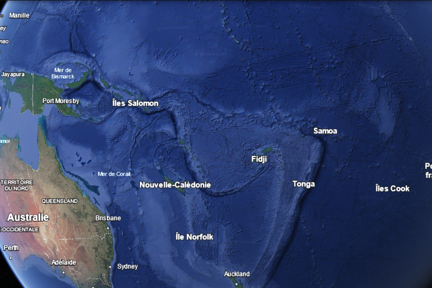 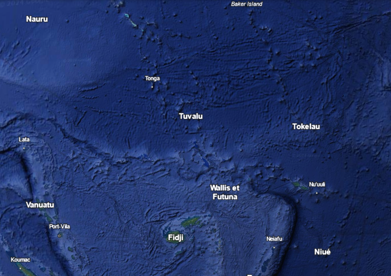 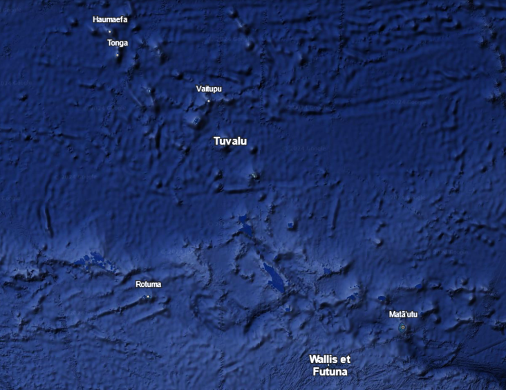 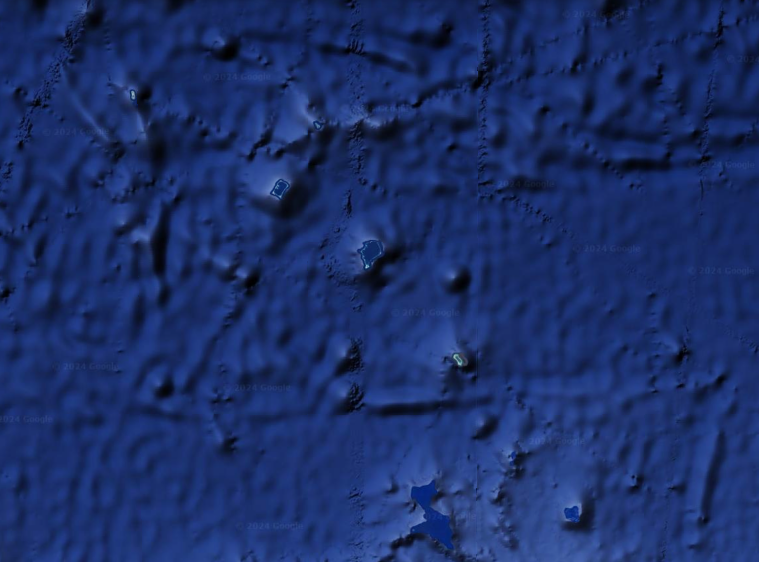 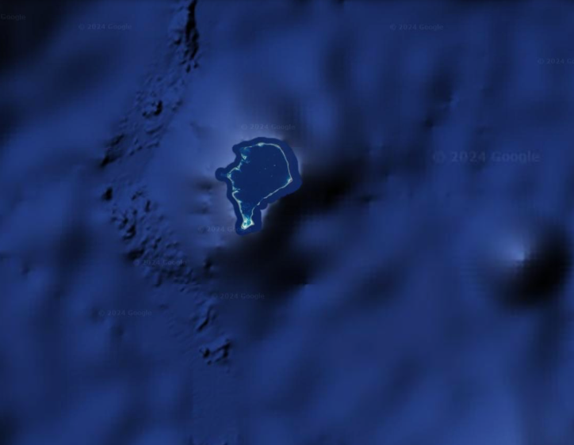 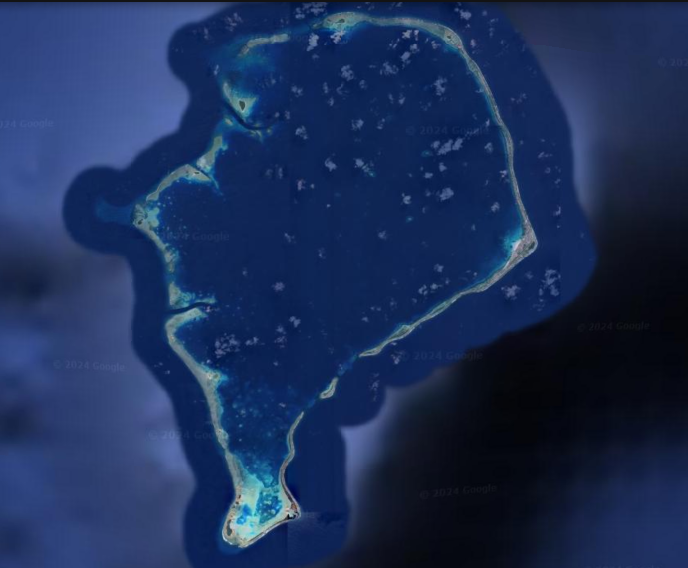Je vais sur cette page vous présenter mon passé. Mais tout d'avord laisser moi vous permettre de me situer sur notre planète.
Mettez le curseur dans cette zone !
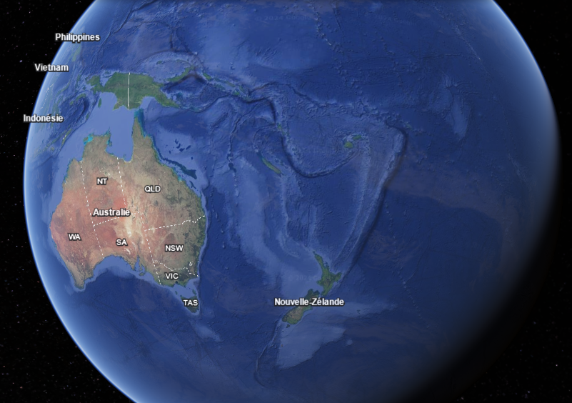 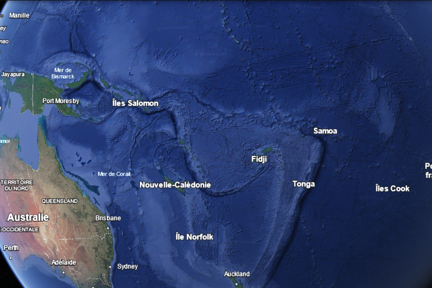 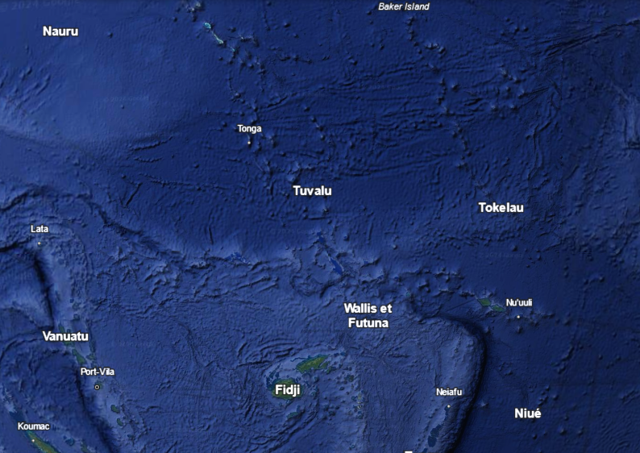 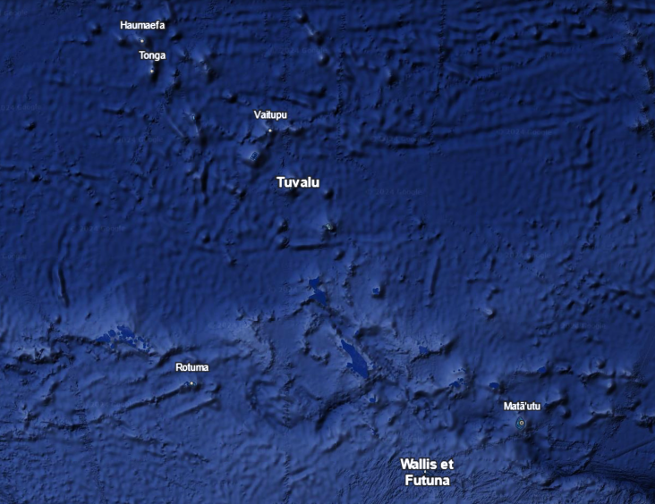 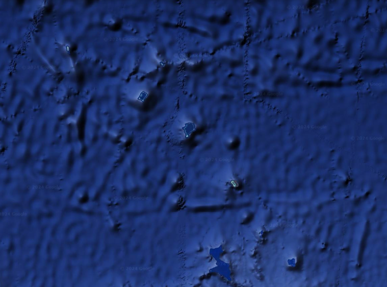 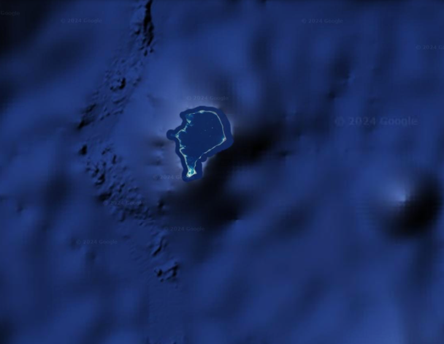 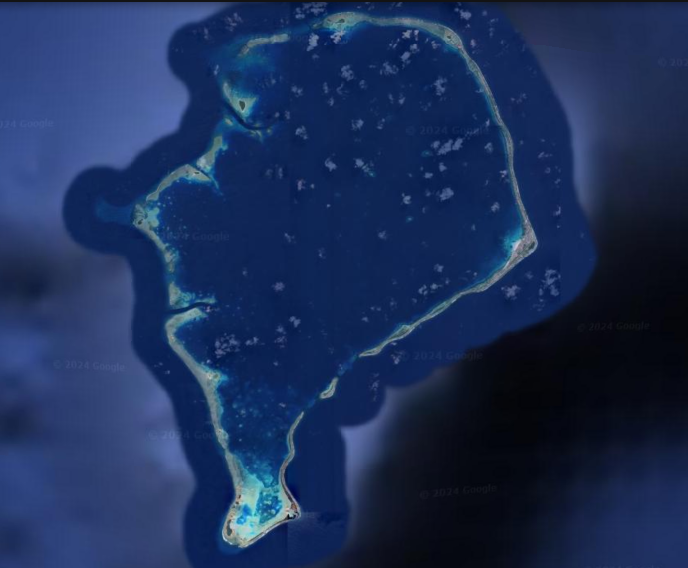J'ai toujours vécu toute seule, perdue dans la grande zone de la Polynésie. Enfin cela avant que des populations polynésiennes me découvrent il y a environ 2000 ans. Ceci est une approximation car les genealogie remontent seulement à 700 ans au plus. En revenche des traces de languages polynésiennes anciennes ont été identifiées dans les languages utilisés sur les Iles Tuvalu.
Pendant longtemps, les habitants n'ont pas été plus de quelques milliers sur l'ile. Celle-ci est d'ailleurs répartie en différentes zone portant chacune leur nom : Nanumea, Niutao, Nanumaga, Nui, Vaitupu, Nukufetau, Funafuti et Nukulaelae
Voici une illustration de la société hiérarchisée sur l'île :
Aliki /Le chef

Tao Aliki / Le chef assistant
Te sina o Fenua / Les ainées
Tofuga / Les constructeurs
taulaitu tofuga / Les prêtres
fakagata massaki / Les soigneur
Tagato mo fafine / Les hommes et les femmes
Tino mai nisi fenuna / Les nouveaux arrivants
Pologa / Les esclaves
Les explorateurs anglais arrivèrent dans la décénie 1819 lors d'une éxpédition. Il se ractontent que les chefs des société buvaient avec les anglais de l'alcool que ceux-ci ramenaient d'Europe afin d'obtenir de pouvoir sur eux et de faciliter les échanges. En revenche, cela dégrada fortement l'image du chef.
Un peu plus tard, les anglais ont poussé les populations tuvaliennes dans les années 1860 à l'alphabetisation et au christianisme et c'est à cette même période que les populations se sont pendant cette période cependant faites pillées par des balainiers ou des marchands d'esclaves.
L'ile evient réellement une colonie anglaise en 1882 en devant un état du Commonwealth
C'est seulement en le 1er octobre 1978 que l'île obtient son indépendance
Cette date devient donc le jour de la fête nationale tuvalienne et entraîne beaucoup de choses dont :
Le dollar tuvalien
L'hymne nationale tuvalienne
Dautre part, la population n'a pas beaucoup augmenté, comme le prouve ce tableau ci dessous :
Cela en fait le deuxième le moins peuplé après le Vatican !